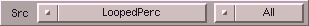
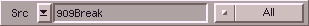

Hiermit kann eine zu bearbeitende Quelle ausgewählt werden. Das Cylegadget hinter dem Namen des Sourcepuffers, ermöglicht
die Auswahl des zu bearbeitenden Bereiches. SoundFX schlägt ihn automatisch den wahrscheinlich gewünschten Modus
vor, d.h. wenn Sie z.B. einem Bereich markiert haben, ist Range
voreingestellt. Folgende Varianten sind möglich :
| Variante | Beschreibung |
|---|
| All | das gesamte Sample wird bearbeitet |
| Window | nur der aktuell sichtbare (gezoomte) Bereich
wird bearbeitet |
| Range | nur der aktuell markierte Bereich wird bearbeitet |
|